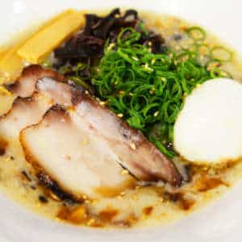

Esto tiene parte mito y parte realidad, la verdadera historia del ramen está unida al intercambio cultural constante de China y Japón durante siglos, mucho antes de Zhu y el rey feudal; como también pasa con muchos otros platos nipones.
Tras la Segunda Guerra Mundial, la sopa ramen se convirtió en un alimento fundamental para el pueblo japonés. De hecho, la fama que acompaña a esta deliciosa preparación por todo el mundo, está asociada a la cultura japonesa que se fue generando en las clases más bajas que sufrían por la falta de alimentos.
Ando Momofuku fue un taiwanés-japonés fundador de Nissin Foods, que ayudó a que Japón saliera de la hambruna de posguerra al inventar una sopa que se pudiera cocinar de manera rápida. Estuvo haciendo pruebas en una cabaña en Osaka hasta que en 1948, logró un paquete de fideos compactos que al hacer contacto con agua caliente se convirtiera en una sopa.
La receta que llegó desde China como una sopa más bien poco elaborada, se convirtió en Japón en todo un manjar con diferentes versiones. Manteniendo parte de su esencia inicial de comida económica y fácil de comer, el ramen evolucionó para convertirse en el aliado ideal de los trabajadores para reponer fuerzas de forma rápida durante la jornada laboral.
Durante el siglo XX tuvo una gran distribución entre los comerciantes comerciantes ambulantes. Conforme Japón se industrializó y urbanizó la gente comía fuera y este platillo resultaba una opción viable y económica que se estableció en los puestos callejeros.
Lista de ingredientes:
- 1 puerro (solo parte verde)
- 1 cebolla chica
- 4 rodajes de jengibre
- 1/2 zanahoria
- 4 dientes de ajo
- 2 huevos
- 1 costilla de cerdo
- Fideos de arroz
- 1 vaso de salsa de soja
- 1 cda de sake
- 3 cdas de mirín
- 2 cditas de azúcar
- sal

Cómo hacer ramen en 8 pasos.
- Separa la costilla de cerdo del hueso. poner el hueso en una olla con agua a hervir. Cuando cambie de color, retirarlo y lavarlo con agua fría.
- Colocar en una olla con agua: el hueso de costilla de cerdo, el puerro, 3 dientes de ajo machacados, 3 rodajas de jengibre, la cebolla y la zanahoria. Agregar sal. Hervir 1 hora a fuego lento.
- Dorar la costilla de cerdo en una sartén, de ambos lados. una vez dorada, agregarla en la olla y dejarla 10 minutos.
- Poner a hervir en agua con un chorro de vinagre los dos huevos. Deja 6 minutos en total. Enfriar y pelar.
- Poner en una olla aparte la salsa de soja, el mirín, el azúcar y el sake. Agreagar el diente de ajo machacado, la rodaja de jengibre y la hoja de puerro que habíamos reservado. Cocinar a fuego lento y apagar cuando rompa el hervor.
- Colocar a marinar en esta salsa el cerdo y los huevos enteros y pelados. Mínimo 1/2 hora.
- Cocinar la pasta como indica el paquete.
- Emplatar: colocar en el plato 3-4 cucharadas soperas de salsa de soja de la marinada. Agregar la porción de fideos en el centro y el caldo de la sopa hastas completar la mitad del plato. Poner en un costado el cerdo, cortando en tirasfinas. En el otro, un huevo partido al medio (la yema debe estar casi líquida). Llover con la cebolla de verdeocortada finita y en chanfle.

- Separa la costilla de cerdo del hueso. poner el hueso en una olla con agua a hervir. Cuando cambie de color, retirarlo y lavarlo con agua fría.
- Colocar en una olla con agua: el hueso de costilla de cerdo, el puerro, 3 dientes de ajo machacados, 3 rodajas de jengibre, la cebolla y la zanahoria. Agregar sal. Hervir 1 hora a fuego lento.
- Dorar la costilla de cerdo en una sartén, de ambos lados. una vez dorada, agregarla en la olla y dejarla 10 minutos.
- Poner a hervir en agua con un chorro de vinagre los dos huevos. Deja 6 minutos en total. Enfriar y pelar.
- Poner en una olla aparte la salsa de soja, el mirín, el azúcar y el sake. Agreagar el diente de ajo machacado, la rodaja de jengibre y la hoja de puerro que habíamos reservado. Cocinar a fuego lento y apagar cuando rompa el hervor.
- Colocar a marinar en esta salsa el cerdo y los huevos enteros y pelados. Mínimo 1/2 hora.
- Cocinar la pasta como indica el paquete.
- Emplatar: colocar en el plato 3-4 cucharadas soperas de salsa de soja de la marinada. Agregar la porción de fideos en el centro y el caldo de la sopa hastas completar la mitad del plato. Poner en un costado el cerdo, cortando en tirasfinas. En el otro, un huevo partido al medio (la yema debe estar casi líquida). Llover con la cebolla de verdeocortada finita y en chanfle.